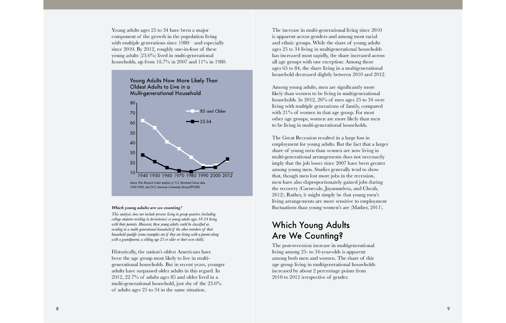
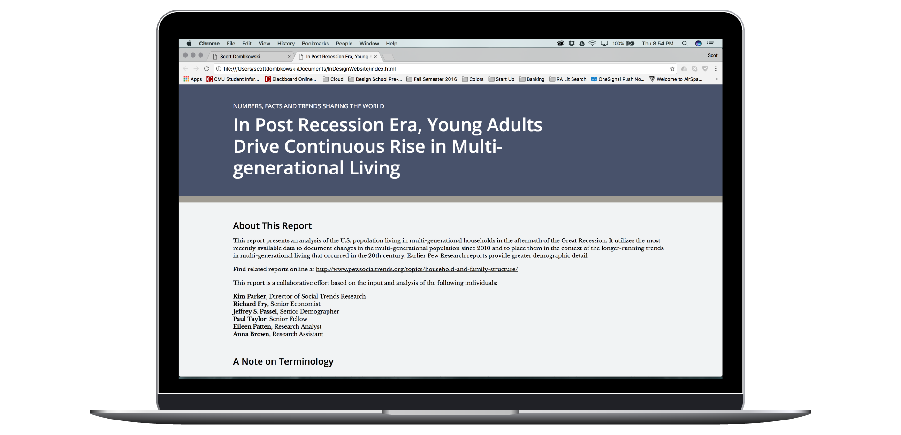
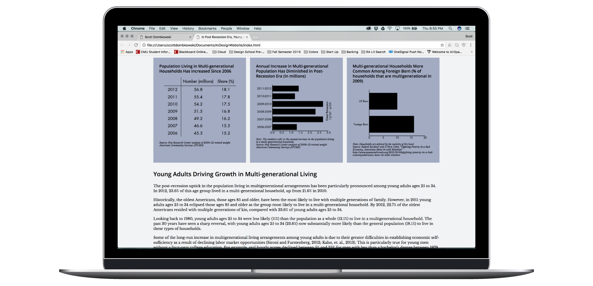

Designed a long-form PDF document in InDesign and a website version of that PDF.
Dates: September 2016 - October 2016
Team: Scott Dombkowski
In the second project of our MA Studio I: Visual Communication Fundamentals course, we each designed a long-form PDF document in InDesign and a website version of that PDF. We again were provided content in which we were meant to “create a long-form PDF document utilizing a visual system with consistent visual language, while considering readability of text, density of information, flowing in charts and graphs, and creating tabular data that is easy to read. We will also did a translation of that design to the web using HTML and CSS, paying special attention to the relationship between semantics of HTML and visual presentation”.

PDF Title Page

PDF Content Page

HTML Title Section

HTML Content Section